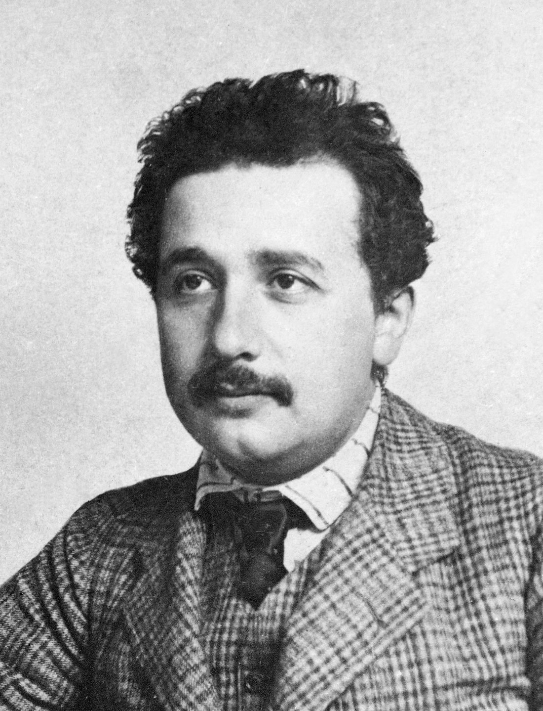
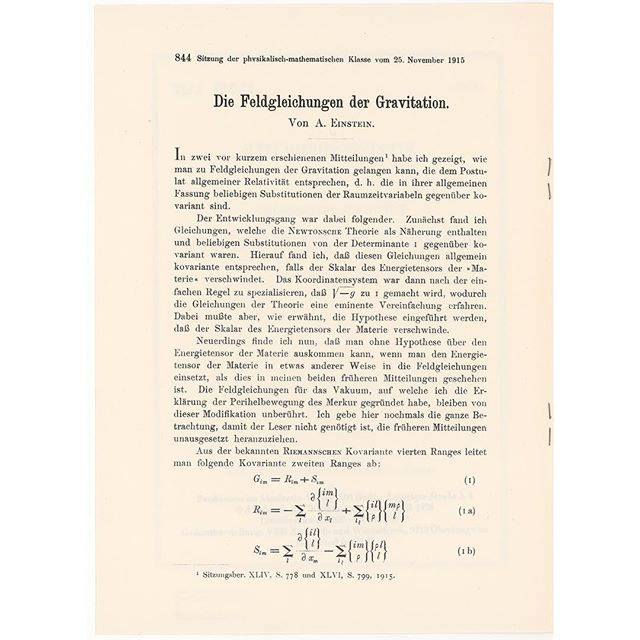
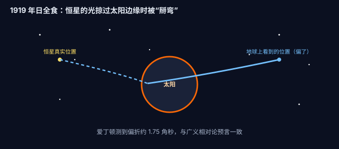
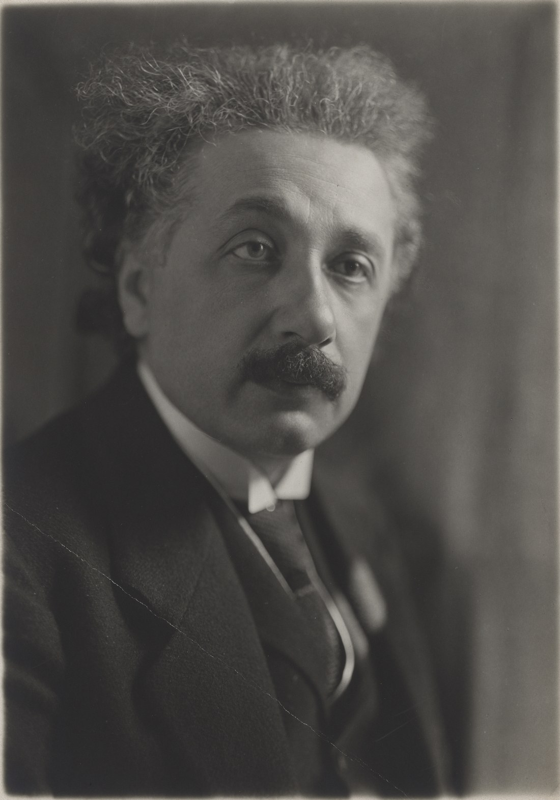
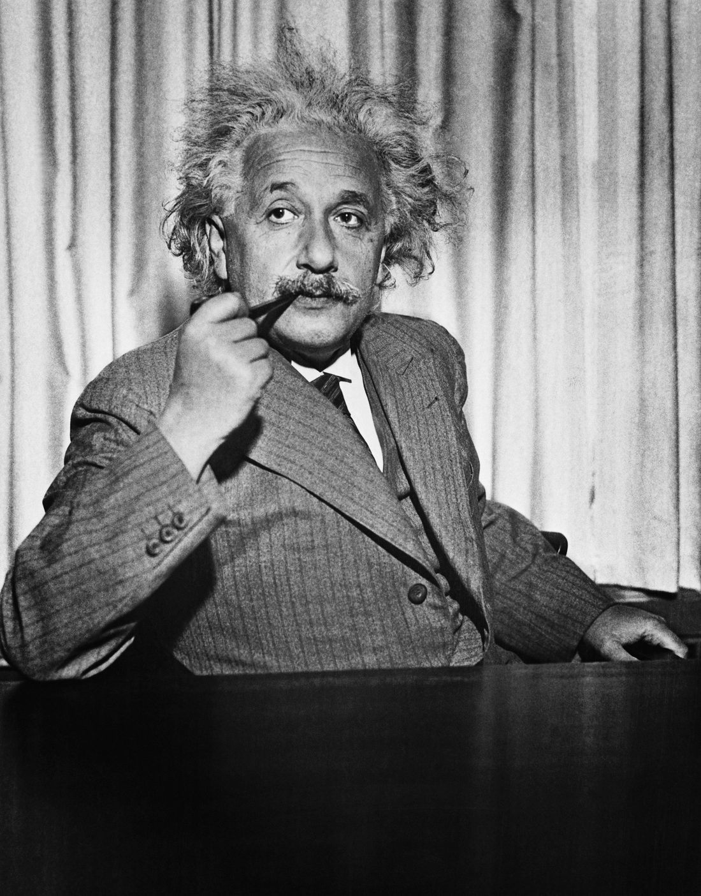
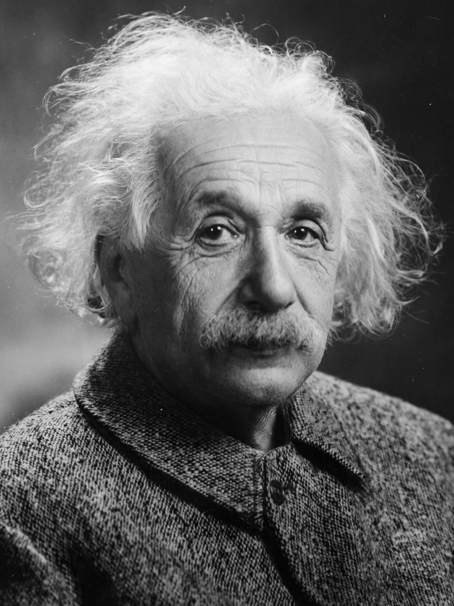

按时间顺序，把他七十六年里的关键节点串起来。每一年都可以点开看详情——你会看到，那些改变世界的想法，大多不是“灵光一现”，而是在漫长的思考里慢慢长出来的。
💡 点任意一年的标题，展开 / 收起内容
出生：一个说话晚的普通男孩
3 月 14 日 · 德国乌尔姆
阿尔伯特·爱因斯坦出生在德国乌尔姆一个犹太家庭。小时候他说话很晚，家人一度担心他迟钝；可一旦开口，问的问题却常常把大人难住——“为什么指南针的针总是指向同一个方向？”
他后来回忆，正是那只指南针，让他第一次感受到“背后有某种深藏的东西”。这个好奇心，贯穿了他的一生。
考入苏黎世联邦理工学院
17 岁 · 没考上建筑，读了师范系物理数学
爱因斯坦少年时随家迁居瑞士。他偏科严重——数学物理极好，却讨厌死记硬背的文科。第一次考联邦理工没过，补了一年文科后于 1896 年入学，主修物理和数学，目标当老师。
大学里他常逃课、自己读前沿论文，结果毕业时没拿到助教职位，一度四处打零工。这段“失意”反而让他后来能在专利局安静地想大问题。
进入伯尔尼专利局
23 岁 · 一份“朝九晚五”的普通工作

1902 年，爱因斯坦在瑞士伯尔尼的专利局当上技术员，审查发明申请。工作不忙，他白天上班、晚上想宇宙。朋友戏称这是他的“偷来的时间”——用一份安稳工作，养着一份改变世界的爱好。
离开专利局，成为大学教授
30 岁 · 从小职员到苏黎世大学副教授
奇迹年后，爱因斯坦的名声迅速传开。他陆续离开专利局，先后在苏黎世、布拉格、再回苏黎世任教。从一个被大学拒之门外的毕业生，变成了被争抢的学者。
受邀前往柏林
35 岁 · 普鲁士科学院，欧洲物理中心
1914 年，爱因斯坦受邀到柏林，担任普鲁士科学院院士，并领导 Kaiser Wilhelm 物理研究所。这里是当时世界物理的中心。也正是在这里，他集中精力攻克更难的“引力问题”。
广义相对论完成：引力是时空弯曲
36 岁 · 从狭义到广义，十年磨一剑

1915 年，爱因斯坦向普鲁士科学院连续报告，完整给出了广义相对论。他把引力解释成“质量和能量弯曲了时空”，物体沿弯曲时空里的自然路径运动。这比十年前的狭义相对论更进一步，也推翻了牛顿沿用两百多年的引力图景。
理论一算出来，连他自己都惊讶于它的优美。接下来要做的，是等一次日全食来验证。
日食观测证实：星光真的被掰弯了
40 岁 · 一夜成名，登上全球头版

广义相对论预言：光经过大质量天体附近会被偏折。1919 年 5 月，英国天文学家爱丁顿借一次日全食，拍下太阳背后恒星的位置——它们果然比平时“挪了位”，偏折量和爱因斯坦算的一模一样。
消息传到伦敦，《泰晤士报》头版写道：“牛顿被推翻了。”爱因斯坦从此走出学术圈，成了家喻户晓的名字。
诺贝尔物理学奖
42 岁 · 因光电效应获奖（非相对论）

1921 年，爱因斯坦获得诺贝尔物理学奖。有意思的是，获奖理由写的是“对光电效应定律的发现”，而不是更出名的相对论——因为当时相对论仍有争议，而光电效应已被实验牢牢证实。
移居美国，加入普林斯顿高等研究院
54 岁 · 因犹太身份离开纳粹德国

1933 年纳粹上台，身为犹太人的爱因斯坦不再回德国，定居美国，加入普林斯顿高等研究院。从此他主要在美国做研究，并日益公开地参与和平与反战活动。
致信罗斯福：提醒原子能的威力
60 岁 · E=mc² 的另一面
1939 年，出于对纳粹率先造出原子弹的担忧，爱因斯坦在信上署名，提醒美国总统罗斯福：核裂变可能造出威力空前的武器。这封信推动了后来的曼哈顿计划。
战后，他深感不安，多次呼吁管控核武器、追求世界和平。科学给出力量，怎么用，是他晚年反复纠结的问题。
婉拒以色列总统邀请
73 岁 · “我只会和方程打交道”
1952 年，以色列首任总统魏茨曼逝世，政府邀请爱因斯坦出任总统。他婉拒了，说自己“只懂自然规律，不懂人”。他把一生都献给了追问宇宙，而非管理国家。
逝世于普林斯顿
4 月 18 日 · 享年 76 岁

1955 年，爱因斯坦在新泽西州普林斯顿逝世。直到临终前，他仍在草稿纸上推算那个未竟的梦——把自然界的几种力统一进同一个理论。
他没能完成统一场论，但他改写的时空观、开启的量子与核时代，深刻塑造了我们今天的物理、技术和世界观。正如他所说：“我没有特别的天赋，只是极度好奇。”